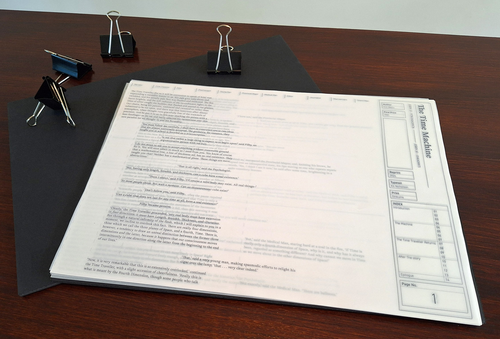
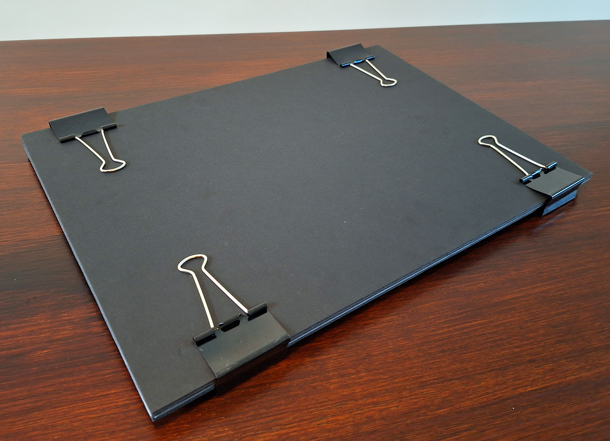
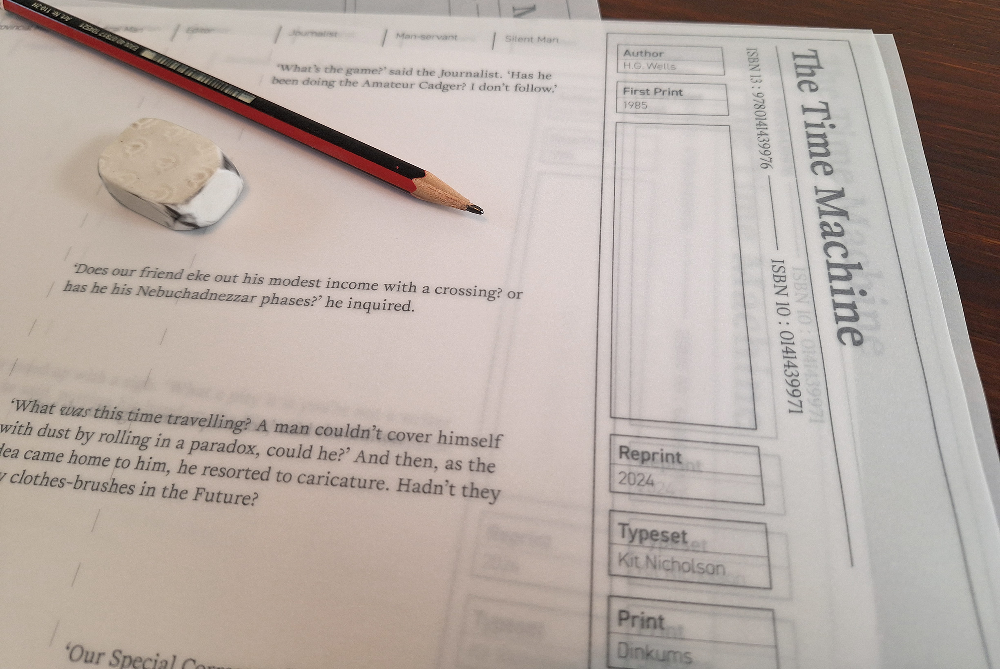
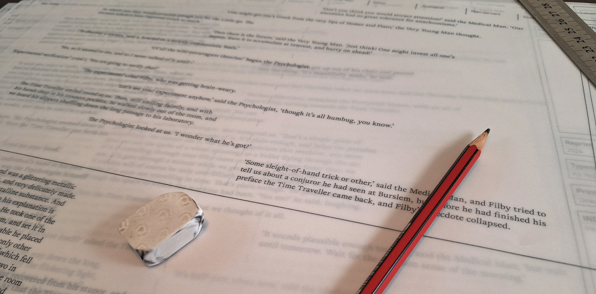
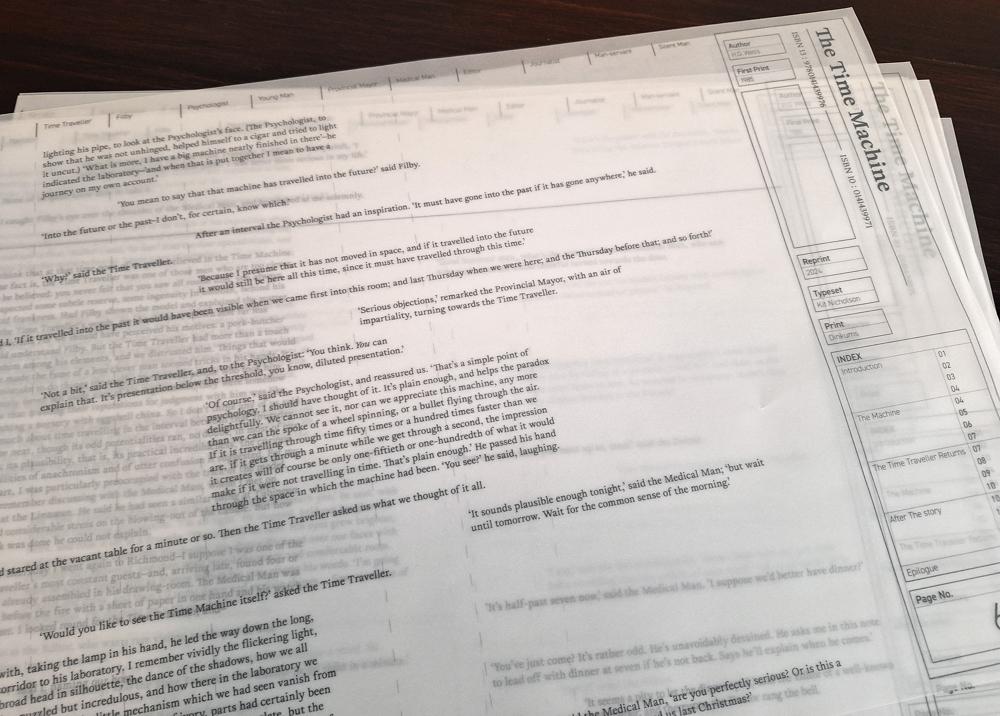

Open - Close
A student project that asked for the first and last chapters of a book to be typeset. I chose The Time Machine by H.G. Wells and discovered that in typesetting only the first and last chapters, the main character’s adventures through time are completely lost. What is left is an informal discussion on time, and the theoretical possibility of time travel. Leaning into this abstract formalism I turned the book into a working drawing that details the nature of time.





